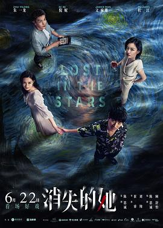
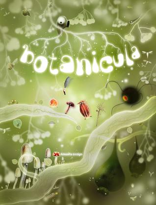
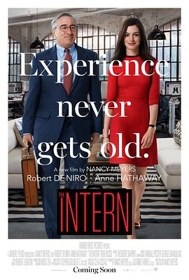
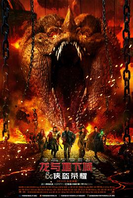
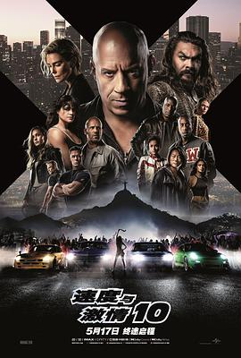

2023年8月
广播发布后不可编辑，所以每条都是那一刻的原话。
2023-08-29 20:53:57
在看 约翰·威尔逊的十万个怎么做 第一季 / How to with John Wilson Season 1 ★★★★★
作者记录生活的视角很奇特，而且能坚持每天都写日志，确实很organize
2023-08-29 12:07:07

2023-08-27 21:39:14

电影叙事还不错，不知道是不是因为翻拍的缘故，看的过程中一直是在被牵着鼻子走的。知道结局才恍然大悟，有强烈的既视感，不确定是不是《1899》还是其他更之前的电影。总之也是看起来观感很不错的反转剧
2023-08-26 15:36:16
 玩过 半条命：爱莉克斯 Half-Life: Alyx ★★★★★
玩过 半条命：爱莉克斯 Half-Life: Alyx ★★★★★
年初的时候在公司用htv vive玩的，画面、交互和操作感真是太真实了。可惜散光度数太高，眼镜太大，fit不进去，所以看得也不是很清晰，没有坚持玩下去。我这眼睛怕是很难快乐体验VR了
2023-08-26 14:17:32

超多收集要素，解密的地图也很大，音乐也非常令人着迷。不得不说很容易迷路，即使有了地图依然容易迷路。应该是小成本解谜游戏的痛点，因为团多没资金做hint系统 =，=
2023-08-26 06:24:53
想玩 肯塔基零号国道 Kentucky Route Zero
2023-08-26 06:10:29
想看 约翰·威尔逊的十万个怎么做 第一季 / How to with John Wilson Season 1
2023-08-25 22:03:39
看过 遇人不熟 / 運命じゃない人 ★★★★☆
一个正常的I人身边围了4个秘密身份的人，各个打着自己的小算盘，通过3次不同视角叙述同一天的时间线展示出来故事的不同面貌。把开始认为的好人一个个全部推翻，一个接一个的反转。精彩！
2023-08-25 21:50:04
 看过 侏罗纪世界3 / Jurassic World: Dominion ★★★☆☆
看过 侏罗纪世界3 / Jurassic World: Dominion ★★★☆☆
爆米花电影，没杀剧情，全靠镜头语言渲染气氛，没有jump scare好评
2023-08-24 21:43:45
看过 预产期 / Due Date ★★★★☆
看了一堆烂片，这部片可以到70-80%的样子。笑点前后呼应的都不错（比如说汽车撞门），很多意想不到的点（比如说墨西哥边境奇遇），节奏掌握的也不错，张弛有度，尤其是冲咖啡那一段太心酸。不足的点主要是全片都是靠对话来驱动剧情。
2023-08-23 22:25:14
转发：


2023-08-21 23:38:59
想看 摄影机不要停！ 续集 好莱坞大作战！ / カメラを止めるな！ スピンオフ ハリウッド大作戦！
2023-08-21 18:51:39
看过 摄影机不要停！ / カメラを止めるな！ ★★★★☆
从《盗钥匙的方法》来的，看了片头40分钟感觉被推荐错了，后面开始发力，所有前面提到的点全部都呼应了，一个废点都没有，看完毫无疑问，是一个很完整的故事。看到最后才发现是两个平行的剧中剧，又是解答了全部的疑问，很棒！
2023-08-21 07:28:05
想看 铁道：家色 / かぞくいろ RAILWAYS わたしたちの出発
fed by mt new uploads
2023-08-20 19:58:32
2023-08-20 19:57:07
 玩过 纸艺历险 Papetura ★★★★★
玩过 纸艺历险 Papetura ★★★★★
很短小很惊喜的游戏，差不多可以算是4个塞尔达神庙的规模。但是折纸风格非常用心，可能素材真的是折出来扫描的？
2023-08-20 15:49:06
看过 超能一家人 ★★★☆☆
很多对老毛子的刻板印象的搞笑点都很不错。全片金句 “家人就是用来‘拖累’的” 十分赞同。
2023-08-19 17:54:41
 在玩 博德之门3 Baldur’s Gate 3 ★★★★★
在玩 博德之门3 Baldur’s Gate 3 ★★★★★
在GOG低价区入了，比steam国区价格略低。非常好玩，把dnd发扬光大了。虽然小时候没有玩过dnd，但是当时是纸上<传奇>，依旧是很怀念的回忆。
2023-08-16 22:52:01

海瑟薇
2023-08-16 22:50:16

看海报以为海瑟薇是intern，结果大叔是intern，这个反差萌导致故事意外地精彩。一度觉得剧中senior intern program是个很不做的idea，凸凹很多退休的老人会投身教育行业，教大家如何为人处世以及人情世故的“智慧”，当然也有老人想继续工作，但是基本上没有这样的entry level的机会。还有就是220人公司的founder能兼顾家庭真的是很理想化了。有着年轻人常见的对于孤独终老的恐惧，却不想放弃梦想。或许和intern/best friend葬在一起也是很棒的事。
2023-08-16 22:41:12
看过 变形金刚：超能勇士崛起 / Transformers: Rise of the Beasts ★★★☆☆
隔了有段时间了，这部特效和剧情都有点不够用心啊 =，= 特效割裂感+无语的剧情略多
2023-08-15 19:04:58

今年才知道DnD就是我小学时候玩的纸上游戏，同事有好几套剧本书，然后带到公司和大家玩。《怪奇物语》第一集开头也出现了。玩起来很慢，因为需要橡皮铅笔反复修改，但是很多人一起玩还是很有乐趣的，可惜长大后感觉再也腾不出时间了。电影很好看，很难得的爆米花电影，彩蛋很多，很多惊喜。
2023-08-14 18:59:29
看过 熔炉 / 도가니 ★★★★★
气氛和气愤从开头到结尾渲染的都很到位。与故事里的内容类似的真实事件，我通过各种渠道也是听说过很多，因为种种原因，我们《内咸》的方式也各不相同。但正如电影上的价值- “我们一路奋战不是为了改变世界，而是为了不让世界改变我们。” 共勉。
2023-08-13 15:28:59
 玩过 塞尔达传说 王国之泪 ゼルダの伝説 ティアーズ オブ ザ キングダム ★★★★★
玩过 塞尔达传说 王国之泪 ゼルダの伝説 ティアーズ オブ ザ キングダム ★★★★★
要不是前有博德之门3，后有Starfield，不然鼓不起勇气去打大魔王。总体来说每一个大战役做的都很棒，神庙解密设计的也很好，当然由于这次高科技的加成，神庙很容易跳过了就。自由度没得说，太好玩了，从来没有一个游戏玩到130小时以上。虽然上一代还没玩完，但是感觉不见得有那么多时间打了，继续吃灰吧先😂
2023-08-12 15:43:06
想看 熔炉 / 도가니
2023-08-12 15:38:06
 看过 茶馆 ★★★★★
看过 茶馆 ★★★★★
老舍的经典在今天开来依然是一个十分让人感到心痛的故事。很有共鸣，很担心七十多了才悟出人生道理。引用最近超导界常说的话：Are we back? We are so back!
2023-08-12 14:24:44
2023-08-11 21:32:26
看过 超能透明人 ★☆☆☆☆
本来以为60分钟的喜剧电影可以轻松一些，没想到剧情是因为平铺直叙才凑不够时间的。剧情设定比较扯，剧情也没有出彩，搞笑的部分太少了，完全不是戏剧。所以，祭出我为数不多的一星。
2023-08-09 17:09:20
想看 孤注一掷
2023-08-07 00:39:42
想看 别班 / VIVANT
2023-08-06 17:02:14

新家人加入，旧家人离去，总之就是编剧最后一集可以拍N部。观感还是真香的，就是有几段有点跟不上剧情发展了，摸不着头脑。
2023-08-06 16:53:19
看过 奇迹·笨小孩 ★★★☆☆
乌托邦一般的深圳，奇迹一般的工友，一点也不笨的大人+99.999%的运气，可能是这个时间地点所需要的主旋律。太过梦幻的人生。
2023-08-03 22:01:33
看过 恶世之子 / To Catch A Killer ★★★☆☆
有点像Criminal Minds的电影版，不过这次的反派有点离谱，有最厉害的射击技巧，但是只是一个激进的环保人士。剧情没有海报上画的精彩感觉。
2023-08-03 18:31:54
想看 狩猎 / 헌트
2023-08-03 18:22:59
想看 茶馆
2023-08-03 18:15:50
2023-08-03 18:06:12